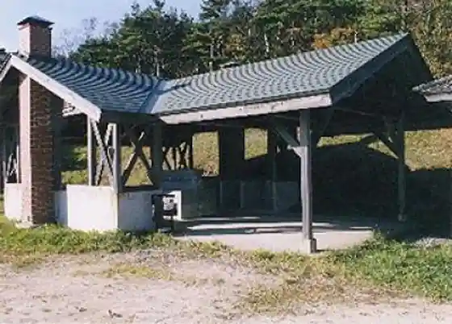
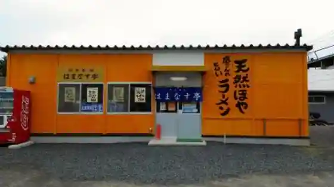

Kuji Taira Gaku Campground
Hironocho, Iwate · 0194-77-2111 · Official / source link

Teretorakku Tane City
Hironocho, Iwate · 0194-65-2999 · Official / source link
Hamanasu Tei Main Shop
Hironocho, Iwate · 0194-65-2981 · Official / source link

Edogahama Domburi
Hironocho, Iwate · 0194-53-4989 · Official / source link
Iso Ryori Ki Ri Ya
Hironocho, Iwate · 0194-65-2971 · Official / source link
Ono Furusato Bussan Kan
Hironocho, Iwate · 0194-77-3888 · Official / source link
Yume Gyunyu Yume Yoguruto
Hironocho, Iwate · 0194-77-4301 · Official / source link
Yuki Center
Hironocho, Iwate · 0194-77-4379 · Official / source link
Hiroshi Hachi Ya
Hironocho, Iwate · 0194-65-5222 · Official / source link
Hiro no Suisan Hall Uniiku
Hironocho, Iwate · 0194-65-5161 · Official / source link
Taneichi Sanchoku Fureai Plaza
Hironocho, Iwate · 0194-65-3910 · Official / source link
Tane City Seaside Park Campground
Hironocho, Iwate · 0194-65-5916 · Official / source link
Tane City Seaside Park Beach
Hironocho, Iwate · 0194-65-5555 · Official / source link
Kombu Maki
Hironocho, Iwate · 0194-65-3973 · Official / source link
Roadside Station (O no) Shoku no Kan
Hironocho, Iwate · 0194-77-3202 · Official / source link
O no Kyanpasu
Hironocho, Iwate · 0194-77-3202 · Official / source link
Engei Workshop
Hironocho, Iwate · 0194-77-3202 · Official / source link
Ono Sangyo Dezain Center
Hironocho, Iwate · 0194-77-3202 · Official / source link
Nambu Moguri
Hironocho, Iwate · 0194-65-2145 · Official / source link
Hironocho Ritsu Tane City Folk History Museum
Hironocho, Iwate · 0194-65-3943 · Official / source link
Okaya Inari Shrine
Hironocho, Iwate · 0194-65-3764 · Official / source link
Kuji Taira Gaku
Hironocho, Iwate · 0194-77-2111 · Official / source link
Tainai Kuguri
Hironocho, Iwate · 0194-77-2111 · Official / source link
Nakano Shirataki
Hironocho, Iwate · 0194-65-5916 · Official / source link
Takizawa Otaki
Hironocho, Iwate · 0194-65-2111 · Official / source link
Mado Iwa
Hironocho, Iwate · 0194-65-2111 · Official / source link
Yamato no Oka Forest Park (Kyushichu)
Hironocho, Iwate · 0194-65-2111 · Official / source link